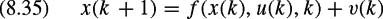

|
| |||||||||||||
|
|
||
The Kalman filter is a powerful tool for linear systems, but many systems encountered in practice are nonlinear. Consider the system
| (8.35) | 
|
| (8.36) |
|
where x, y, u, v, and w are as before and
are both continuously differentiable in x(k). One approach to state estimation for systems of this type is to linearize the equations about the current estimate and then apply Kalman's equations using the resulting approximation. This formulation is called the extended Kalman filtering. The EKF equations are:
prediction:
| (8.37) |
|
| (8.38) |
|
where
| (8.39) |
|
update:
| (8.40) |
|
| (8.41) |
|
where
| (8.42) |
|
| (8.43) | 
|
| (8.44) | 
|
and
| (8.45) |
|
The EKF is well suited to the problem of localizing a mobile robot equipped with sensors that can detect range and bearing to previously mapped landmarks in the environment [278]. Consider a robot whose state at time k is given by x(k) = [xr(k), yr(k), θr(k)]T, where (xr(k), yr(k)) denotes its position in the plane and θ(k) denotes its orientation. The input is u(k) = [u1(k), u2(k)]T, where u1(k) and u2(k) denote the forward and angular velocities of the robot, respectively. The process model for this robot nonlinear, i.e.,
where v(k) is a random vector from a Gaussian distribution whose mean is zero and covariance is V(k).
The robot is equipped with sensors that can measure the range and bearing to certain landmarks in the environment. Assume that the free space is populated with nℓ landmarks whose locations are known to be (xli, yli), i = 1, 2,...,nℓ. At any time k, the robot can only see the subset of landmarks that is within the range of its sensors, so the number of measurements taken varies with k. The number of measurements taken at the kth timestep is denoted by p(k). Each measurement has two components, a range component and a bearing component. We also assume for now that for each measurement, we somehow know which landmark was observed. We introduce the association map a: {1, 2,...,p(k)} → {1, 2,...,nℓ} which is defined such that the ith measurement at time k corresponds to the a(i)th landmark. The output equation for this system is then given as
where, for i = 1, 2,...,p(k),
and is a random vector taken from a Gaussian distribution with zero mean and covariance matrix Wi(k).
In order to linearize, we differentiate the process and sensor models with
resulting in
and
With these matrices in hand, we can use the linearized Kalman filter equations to estimate the robot state.
The solution presented in the previous section glosses over one very important aspect of localization: it assumes that each measurement is automatically associated with the correct landmark. In practice, landmarks have similar properties which make them good features but often make them difficult to distinguish one from another. When this happens, we must address the problem of data association, which is the question of which landmark corresponds to a particular measurement. This is equivalent to finding the association map used in the previous section.
The basic idea used for data association is as follows. Consider the ith measurement yi(k + 1). For each landmark in the map, we compute the innovation νij which is defined to be the difference between the actual measurement yi(k + 1) and the measurement that we would expect if yi(k + 1) corresponded to the jth landmark and the prediction was correct. This means that
The smaller the innovation νij, the more likely it is that the ith measurement corresponds to the jth landmark. We then can make a good guess of which landmark corresponds to the measurement by choosing the landmark that yields the smallest innovation. However, the notion of size must be weighted by the uncertainties in the predictions and measurements. Fortunately, these uncertainties are encoded in the matrix S from the Kalman filter update equation (8.31), and S can be used to create a Mahalanobis norm for νij which indicates the size of the innovation in units of standard deviations. We write this measure of the innovation as
where
We then can build the data association function a() by setting a(i) equal to the value of j that minimizes χij.
Figure 8.8 contains an example of localization using an extended Kalman filter. The actual path, i.e., ground truth, is displayed along with estimates of the robot's location and its uncertainty of that estimate as the robot moves along the path. Note that the estimate converges to the actual path as the robot moves along the path and as more measurements are taken. Also, note that the uncertainty of the estimate considerably decreases as well.
 "Click To expand")
The EKF solution to the problem of localization using range-only sensors is a trivial extension to the range and bearing case. The only difference is that the output equation will not contain any bearing information, so we simply remove the rows from h and H that correspond to the bearing measurements. The EKF equations are then applied in the usual manner.
|
|
||
|